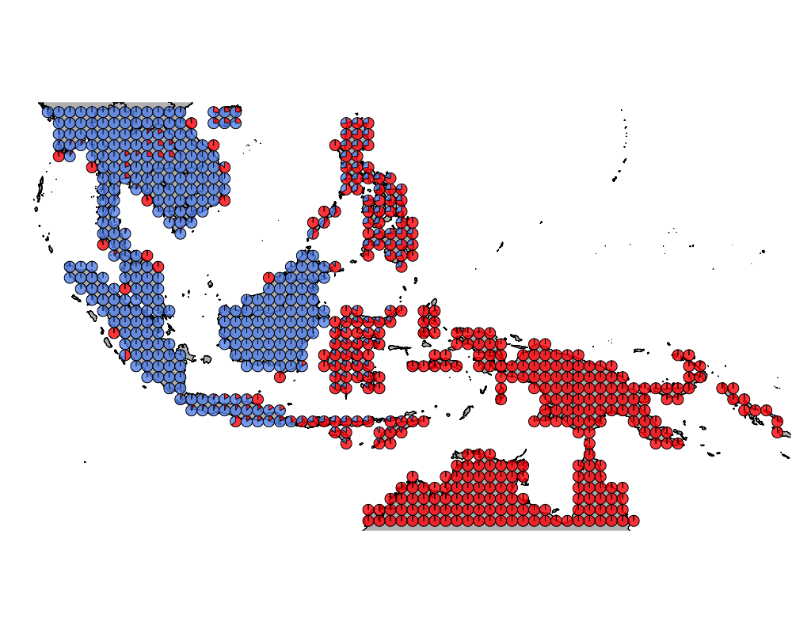

Sea Birds
Kushal K Dey
4/12/2018
Introduction
In this script, we investigate the sea birds cluster.
Packages
library(methClust)
library(CountClust)
library(rasterVis)
library(gtools)
library(sp)
library(rgdal)
library(ggplot2)
library(maps)
library(mapdata)
library(mapplots)
library(scales)
library(ggthemes)Wallacea Region data
datalist <- get(load("../data/wallace_region_pres_ab_breeding_with_seabirds.rda"))
latlong <- datalist$loc
data <- datalist$dat
if(nrow(latlong) != nrow(data)) stop("dimensions matching error")Map of Wallacea
world_map <- map_data("world")
world_map <- world_map[world_map$region != "Antarctica",] # intercourse antarctica
world_map <- world_map[world_map$long > 90 & world_map$long < 160, ]
world_map <- world_map[world_map$lat > -18 & world_map$lat < 20, ]
p <- ggplot() + coord_fixed() +
xlab("") + ylab("")
#Add map to base plot
base_world_messy <- p + geom_polygon(data=world_map, aes(x=long, y=lat, group=group), colour="light green", fill="light green")
cleanup <-
theme(panel.grid.major = element_blank(), panel.grid.minor = element_blank(),
panel.background = element_rect(fill = 'white', colour = 'white'),
axis.line = element_line(colour = "white"), legend.position="none",
axis.ticks=element_blank(), axis.text.x=element_blank(),
axis.text.y=element_blank())
base_world <- base_world_messy + cleanup
base_world
K = 2

geostructure2
K = 10

geostructure2
Thailand lowlands
topics_clust <- get(load("../output/methClust_wallacea_w_seabirds.rda"))Extracting enriched birds
topics <- topics_clust[[10]]
freq <- topics$freq
which_comp <- apply(freq, 1, function(x) return(which.max(x)))
freq2 <- freq[which(which_comp==1),]
idx <- order(freq2[,1])
bird_in_10_names <- rownames(freq2)[idx]
head(bird_in_10_names)## [1] "Lichmera monticola" "Rhipidura dedemi"
## [3] "Tephrozosterops stalkeri" "Tyto almae"
## [5] "Ceyx websteri" "Actenoides bougainvillei"Patterns of presence absence of these birds
PlotAssemblageIdx <- function(name){
dat <- cbind.data.frame(latlong, data[,name])
colnames(dat) <- c("Latitude", "Longitude", "Value")
map_data_coloured <-
base_world +
geom_point(data=dat,
aes(x=Latitude, y=Longitude, colour=Value), size=0.5) +
scale_colour_gradient(low = "white", high = "black")
map_data_coloured
}ids <- c()
for(m in 1:50){
tmp <- data[,as.character(bird_in_10_names[m])]
ll <- length(which(tmp == 1))
if(ll > 3) ids <- c(ids, m)
}
ids## [1] 30 31 32 33 34 35 36 37 38 39 40 41 42 43 44 45 46 47 48 49 50as.character(bird_in_10_names[ids[1]])## [1] "Aerodramus orientalis"PlotAssemblageIdx(as.character(bird_in_10_names[ids[1]]))as.character(bird_in_10_names[ids[2]])## [1] "Nesasio solomonensis"PlotAssemblageIdx(as.character(bird_in_10_names[ids[2]]))
as.character(bird_in_10_names[ids[3]])## [1] "Pitta anerythra"PlotAssemblageIdx(as.character(bird_in_10_names[ids[3]]))as.character(bird_in_10_names[ids[4]])## [1] "Cacatua moluccensis"PlotAssemblageIdx(as.character(bird_in_10_names[ids[4]]))as.character(bird_in_10_names[ids[5]])## [1] "Dicaeum vulneratum"PlotAssemblageIdx(as.character(bird_in_10_names[ids[5]]))
as.character(bird_in_10_names[ids[6]])## [1] "Ducula neglecta"PlotAssemblageIdx(as.character(bird_in_10_names[ids[6]]))
as.character(bird_in_10_names[ids[7]])## [1] "Gymnophaps stalkeri"PlotAssemblageIdx(as.character(bird_in_10_names[ids[7]]))
as.character(bird_in_10_names[ids[8]])## [1] "Ninox squamipila"PlotAssemblageIdx(as.character(bird_in_10_names[ids[8]]))
as.character(bird_in_10_names[ids[9]])## [1] "Philemon subcorniculatus"PlotAssemblageIdx(as.character(bird_in_10_names[ids[9]]))
as.character(bird_in_10_names[ids[10]])## [1] "Todiramphus lazuli"PlotAssemblageIdx(as.character(bird_in_10_names[ids[10]]))
as.character(bird_in_10_names[ids[11]])## [1] "Zoothera joiceyi"PlotAssemblageIdx(as.character(bird_in_10_names[ids[11]]))
as.character(bird_in_10_names[ids[12]])## [1] "Accipiter henicogrammus"PlotAssemblageIdx(as.character(bird_in_10_names[ids[12]]))This R Markdown site was created with workflowr